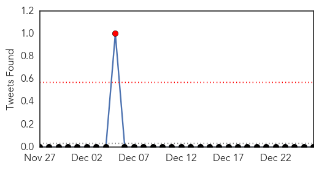

Influenza
30-Day Web Trend
1 alerts, 0 warnings

30-Day Twitter Trend
3 alerts, 0 warnings

Article Locations

Article Confidences

Top Articles:
- 0.998
- Flu widespread across Ohio
- 0.996
- Flu season hitting fast, hard
- 0.995
- Serious flu strain sweeping through Jackson County, more than 1,000 cases in December
- 0.993
- Flu numbers rising in Lee, declining in Collier â for now
- 0.993
- Hundreds of flu cases reported in Lehigh Valley; officials say virus is widespread statewide
- 0.986
- Deadly new “Bourbon virus” doesn't come from whiskey
- 0.972
- NIH Resumes MERS Flu Studies
- 0.966
- Flu Protection Measures
- 0.950
- Frail Seniors Fare Better with High-Dose Flu Vaccine
- 0.935
- How To Figure Out If You Have A Cold, A Flu, Or Allergies
- 0.785
- Get Added Protection Against H3N2 with A.Vogel's Clinically Proven Echinaforce® - News Press Release
- 0.741
- Hospital Visitor Restrictions
- 0.692
- State Continues Stressing Flu Shots
- 0.618
- Washington steps up testing for bird flu in the wild
Top Tweets:
-
No tweets found for Dec 26, 2014
Swine Flu
30-Day Web Trend
4 alerts, 0 warnings

30-Day Twitter Trend
1 alerts, 0 warnings

Article Locations

Article Confidences

Top Articles:
- 1.000
- 51-year-old succumbs to swine flu, hospitals put on alert
- 0.999
- Swine flu kills season's first victim in NCR
- 0.999
- Swine flu knocks Delhi's doors, 51 year old man succumbs to disease : India, News
- 0.996
- New Delhi Records First Death As Woman Dies Of H1N1 Virus
- 0.993
- Swine flu claims first life in Delhi : North, News
- 0.992
- Swine flu death reported in Delhi
- 0.990
- Swine Flu Outbreak Kills a Woman in Delhi
- 0.963
- Swine Flu back in Delhi again, 1 dead so far
- 0.663
- Swine flu claims woman's life in Delhi
Top Tweets:
-
No tweets found for Dec 26, 2014